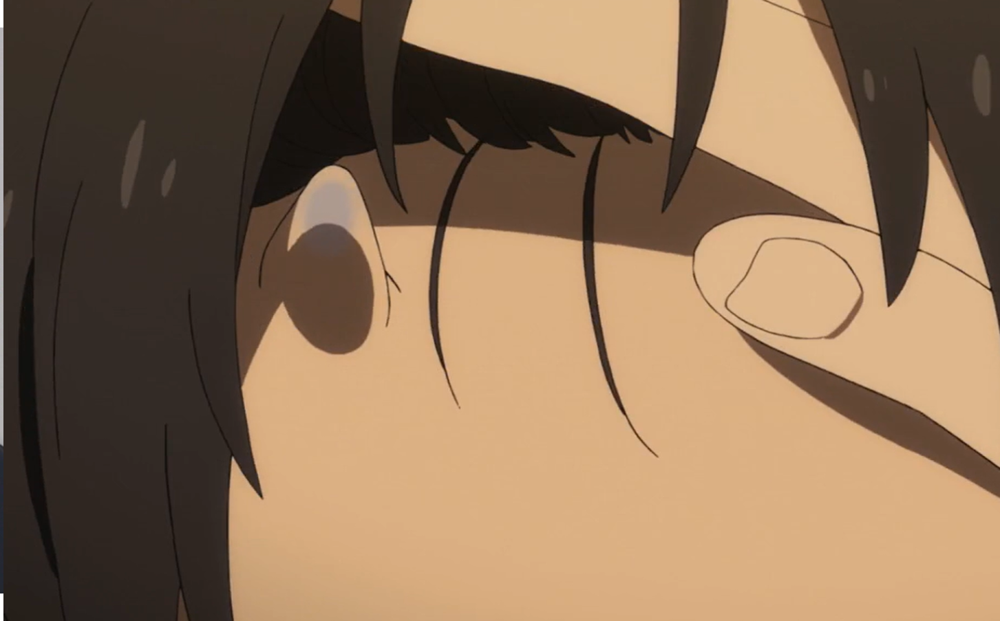
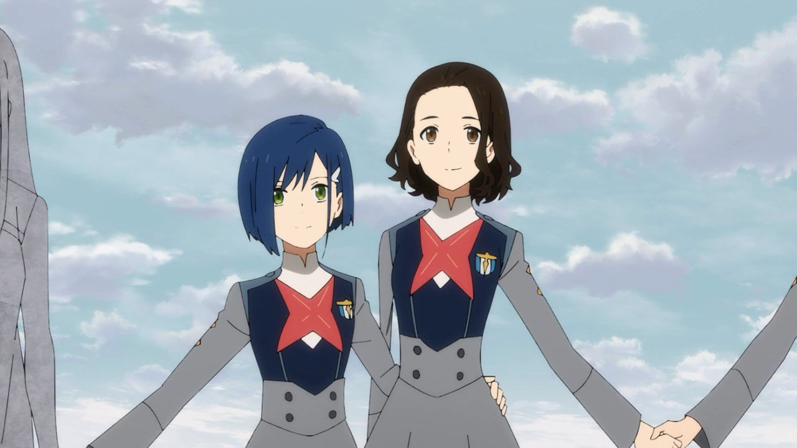
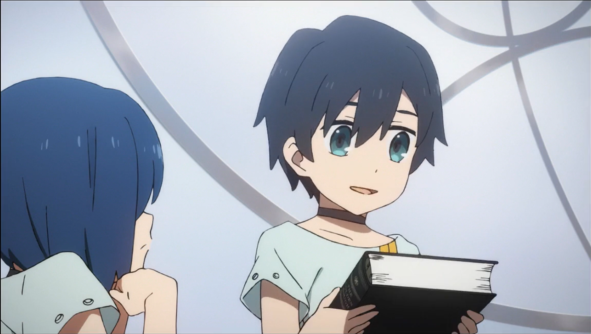
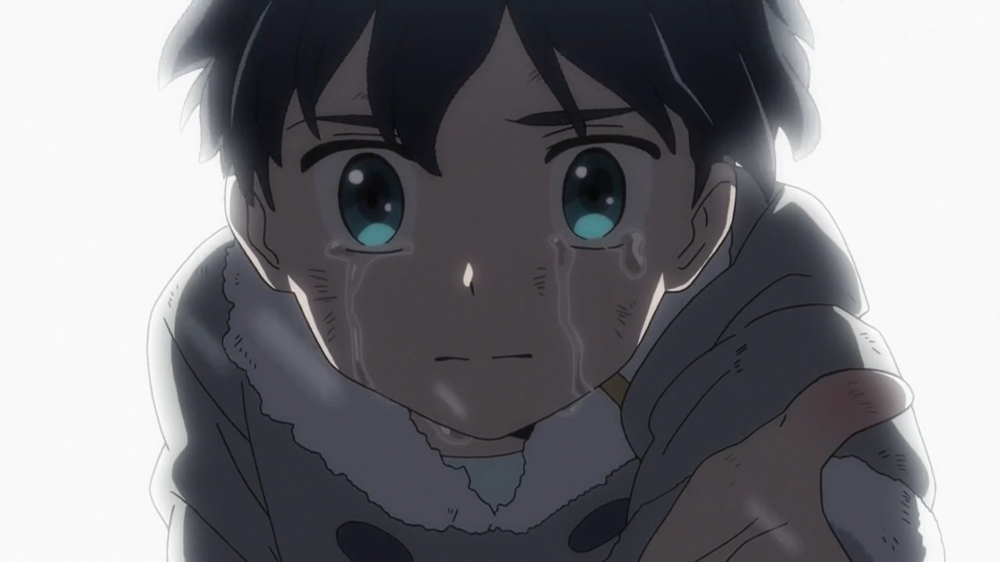
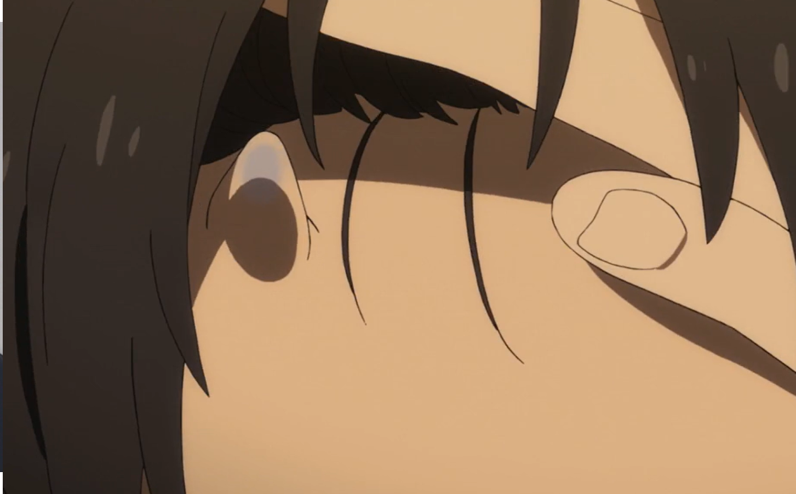
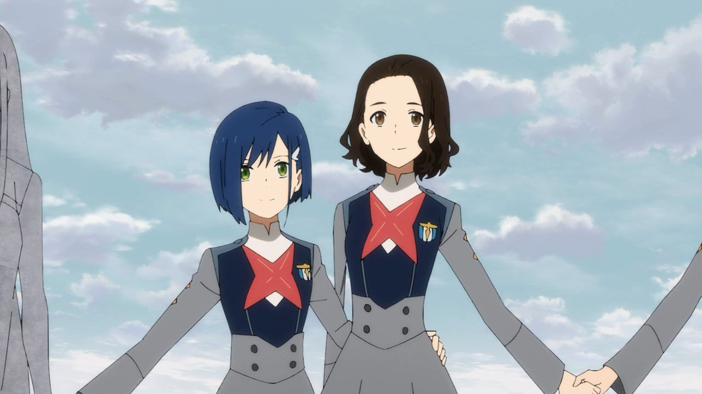
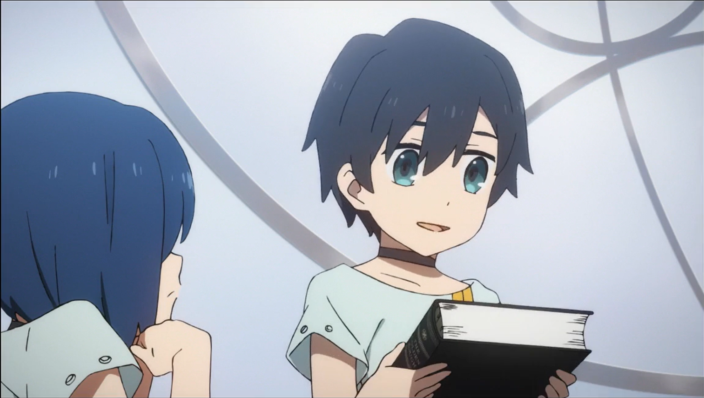
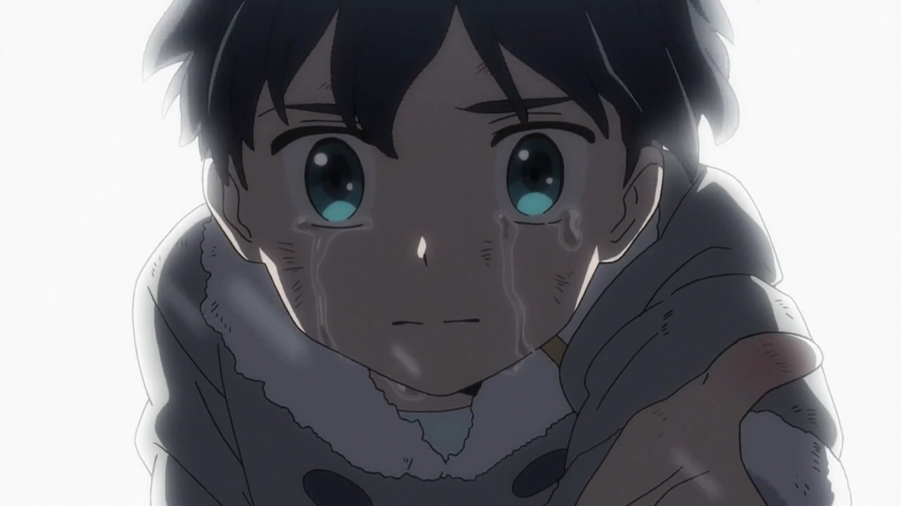

Хиро
Хиро - главный герой данного аниме . Он был известен как паразит с кодовым номером «016».В детстве Хиро был весёлым и подающим надежды, давая имена себе и другим детям, в то время как коды являлись их единственными именами. и когда-то он считался вундеркиндом среди детей. Однако, он не смог синхронизироваться со своим партнером, Наоми, и больше не мог быть пилотом. Он не находил свое место в мире и изо всех сил пытался найти его. Однако, будучи партнером Ноль Два, он стал официальным паразитом и нашел новую причину для жизни.
Внешность
Имеет стандартное худощавое мужское тело с черными, лохматыми волосами и голубыми глазами.
В Эпизоде 5 у него была синяя опухолеподобная мутация в груди, вызванная пилотированием с Ноль Два.
В Эпизоде 6 мутация стала больше, но Хиро смог преодолеть её, и полностью избавиться от неё, хоть у него и остался шрам на груди.
В эпизоде 17 у Хиро на голове появляются синие рожки.
Личность
В детстве Хиро был весёлым и подающим надежды, давая имена себе и другим детям, в то время как коды являлись их единственными именами, таким образом стал популярен у детей. Обучал других детей, в особенности Ичиго, астрономии. Во время своего пребывания в саду Хиро задавал взрослым много вопросов об окружающем мире, но разочаровывался, когда каждый раз взрослые не отвечали ему
Через какое-то время провалился на одном из экзаменов, из за чего потерял уверенность в себе. В результате хотел покинуть плантацию, но его бывший партнёр Наоми заставила его отказаться.
История
Хиро приехал из того же детского дома где жили Наоми, Ичиго и Горо, позже стал партнёром Наоми. Вместе с Наоми провалил тест, после чего они были вынуждены покинуть плантацию, но Хиро получил разрешение остаться. Впрочем, он все равно хотел уехать, но в последний момент Наоми остановила его, и он остался. Когда Наоми отъезжает, на плантацию нападает Рёвозавр. Он повредил транспорт, но Наоми, как позже выяснилось, выжила.
 






